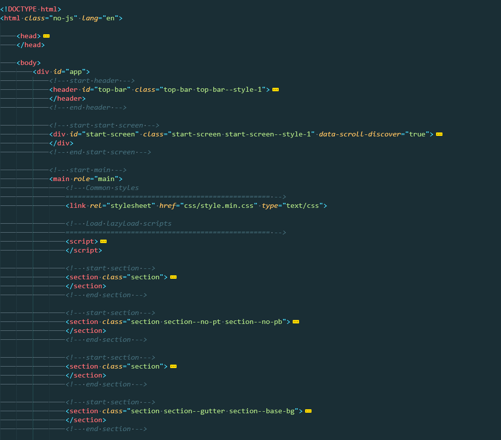
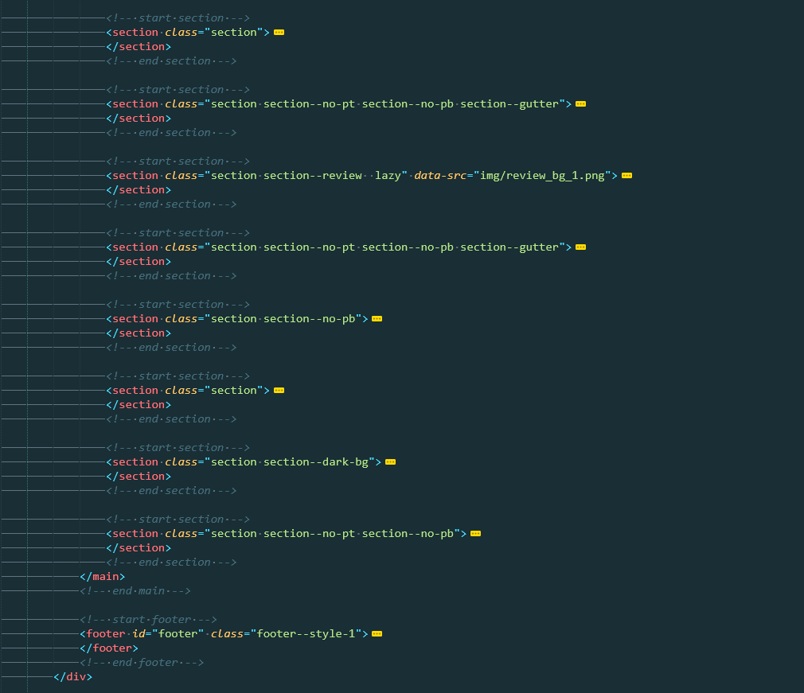
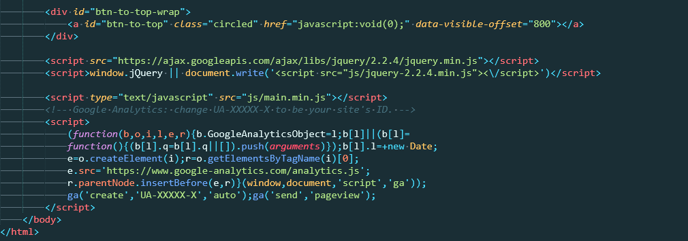

Documentation
Created: January 2019
Thank you very much for purchasing our template. Should you have any questions after reading this file, feel free to contact us through Themeforest.
Structure
These three words define template in the main. Innovation technologies enabled development of absolutely flexible and dynamic template. For instance, if you need to move one part of programming code to another page, you don’t have to view all code you have. You will easily find it in certain file and directory. What is more, you can be sure everything will be perfectly fine even if the code is moved.
- Css directory main template directory. Contains the files cascading style sheets. Needed to determine the style sheet and current connected plug-ins
- Images directory contains images for template. Same contains child folders with images for color schemes, images for slider and images for retina displays.
- JS directory contains javascript files responsible for the operation of plug-ins such as a slider, tabs, toggles and etc
- Settings box directory is the box for color change. Contains javascript , css end one icon.
Key feature of our templates is style structuring. You will easily find a style you are searching for. All styles are very flexible, you can safely move blocks from page to page.
top
Installation and Using
Gulp and Node JS
- For use and edit theme you need install Gulp and Node.js
- Install node packages (npm i --save-dev)
- You need edit src folder
- After editing files in src folder you can use dist folder
Note:
If you don’t use Gulp and Node JS you can use dist folder right away
Google map API
- For using google map you need install Google map API
- In main.js file you need find line $.getScript('http://maps.google.com/maps/api/js?sensor=false and insert key
Contact Form using
- Open send_mail folder
- Open mail.php and enter login and password
- Enter settings of your hosting
- Copy send_mail folder in dist folder
top
Code details
We used the following technologies to develop our template:
General markup
Cryptonet have usual markup with header, content and footer
Show structure



top
PSD Files
Agro is professional template.
This template for agriculture company and organic food is great structured so you can easily move any blocks, fix text etc. Template has a clean & stylish layout designed to promote anything from a corporate business to a portfolio site. The PSD files were made in Adobe Photoshop CS6 , and should run in any other Photoshop version
Features
- 15 Customizable PSD files
- All Graphic included. Send email and we send you graphic and images
- Fully Layered PSD
- Fully Customizable
- Google Fonts
- FontAwesome Icons
- Retina Ready
- Responsive
Pages:
- Home Page 1
- Home Page 2
- Home Page 3
- About Us
- Services
- Products
- Products Details
- Blog
- Blog Details
- 404 Page
- Typography
top
Fonts Installation
Please install all fonts on your computer before you start working with template.Please see the following instructions how to install fonts on your computer.
Download next fonts:
- Raleway
- Gilroy
- Storytella
- Brusher
- Open Sans
You can find it on http://www.google.com/webfonts#HomePlace:home.
Windows 7
- Navigate to the folder that contains the fonts.
- Select the fonts you want to install. You can click to select one font, Control-click to select several fonts, or Shift-click to select a contiguous group of fonts.
- Right-click the selected fonts and choose "Install."
- The fonts are now installed and will appear in the font menus of your applications.
Windows Vista
- Select “Control Panel” from the Start menu
- Select “Appearance and Personalization.”
- Select “Fonts.”
- In the Fonts window, Right Click in the list of fonts and choose “Install New Font.”
- Navigate to the folder that contains the fonts.
- Select the fonts you want to install. You can click to select one font, Control-click to select several fonts, or Shift-click to select a contiguous group of fonts.
- Press the “OK” button to install the fonts.
- Close the Fonts control panel when you are finished.
- The fonts are now installed.
Windows XP
- Double-click on “My Computer.”
- Under “Other Places,” click on “Control Panel.”
- If you are using the Classic View, click on “Fonts.”
(If you are using the Category view, click on “Appearance and Themes.” Under “See Also” on the left-hand side of the screen, click on “Fonts.”)
- In the Fonts window, select the File menu, and choose “Install New Font.”
- Navigate to the folder that contains the fonts.
- Select the fonts you want to install. You can click to select one font, Control-click to select several fonts, or Shift-click to select a contiguous group of fonts.
- Press the “OK” button to install the fonts.
- Close the Fonts control panel when you are finished.
The fonts are now installed and will appear in the font menus of your applications.
top
Sources and Credits
Icons
Images
top
We hope you enjoy this template and wish you much luck with your website.